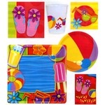

L’estate è perfetta per oziare. A settembre quando le vacanze saranno finite, ci si potrà deprimere con più gusto pensando di averla trascorsa senza aver fatto alcunchè di buono.Estateultima modifica: 2008-07-29T10:35:40+02:00da
Reposta per primo quest’articolo